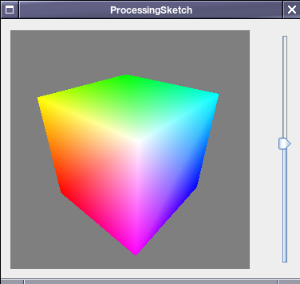

Me encanta Processing, Processing es un Lenguaje de Programación visual, basado en Java. Processing está diseñado para correrse como Java Applets, como Aplicaciones por si Solas o como una librería de Java, de estos el ultimo es del que he encontrado menos documentación, por lo que me decidí a publicar como logre correr sketches de Processing en aplicaciones Java de Escritorio comunes.

Asumo que ya has programado Java o tienes una noción básica de Programación Orientada a Objetos y hayas usado Processing un poco, lo cual necesitaras para comprender lo que se hará.
El primer paso para esto es obviamente descargar Processing, solo visita la pagina oficial y descarga la versión correcta para tu Sistema Operativo. A seguir, debes descargar el Java Development Kit y un IDE para desarrollo, dos muy populares son NetBeans y Eclipse.
Luego que tengas tu entorno de desarrollo ya instalado, crea un Proyecto, siguiendo las instrucciones de tu IDE.
Luego debes añadir la librería core.jar, la cual contiene la funcionalidad básica de Processing, a tu proyecto, Esta librería se encuentra en la carpeta lib, dentro de la carpeta donde instalaste Processing. Para hacer esto simplemente selecciona tu proyecto, haz Click Derecho en las librerias del proyecto y selecciona Agregar Libreria.
Una vez Agregada tu libreria a tu proyecto, comenzar a usarla es muy facil. PApplet es la clase de la cual se Extienden los Sketch que se usan en Processing, en esta existen dos Métodos basicos, setup() y draw() los cuales utilizamos para establecer los atributos base y ejecutar cada ciclo de dibujo de nuestro Sketch. Lo mas importante es que PApplet extiende de java.awt.Component y de java.awt.Panel lo cual nos permite agregarlo a nuestros JFrame o JPanel, sin dificultad.
Asi que estamos listos para iniciar con un Código simple para agregar nuestro Sketch
Codigo del Sketch en Processing
public void setup() { size(400, 400); background(0); } public void draw() { background(0); fill(200); ellipseMode(CENTER); ellipse(mouseX,mouseY,40,40); }
Ahora, para pasarlo a nuestra aplicacion, debemos crear una clase que extienda de PApplet, un JFrame que lo contenga y una clase principal que lance la aplicación.
Codigo Fuente en Java
Main.java
package processJava; public class Main { public static void main(String[] args) { new CuadroDespliegue().setVisible(true); } }
CuadroDespliegue.java
package processJava; public class CuadroDespliegue extends javax.swing.JFrame { CuadroDespliegue(){ this.setSize(600, 600); //Las Dimensiones de la Ventana setDefaultCloseOperation(javax.swing.WindowConstants.EXIT_ON_CLOSE); javax.swing.JPanel panel = new javax.swing.JPanel(); panel.setBounds(20, 20, 600, 600); processing.core.PApplet sketch = new SketchCirculo(); panel.add(sketch); this.add(panel); sketch.init(); //Esto es necesario para iniciar el Sketch this.setVisible(true); } }
SketchCirculo.java
package processJava; import processing.core.*; public class SketchCirculo extends PApplet { public void setup() { size(400, 400); background(0); } public void draw() { background(0); fill(200); ellipseMode(CENTER); ellipse(mouseX,mouseY,40,40); } }
Y Listo, De esta manera puedes correr tus Sketch de Processing como componente de una aplicación Java
This post is also available in: Inglés

{kind=link}
Sergio Mancera
Hola!
2010-09-06T20:28:52+00:00Muchas gracias, esta muy bien explicado!
¿Tengo una duda, es posible usar Processing como un applet para una aplicación web?